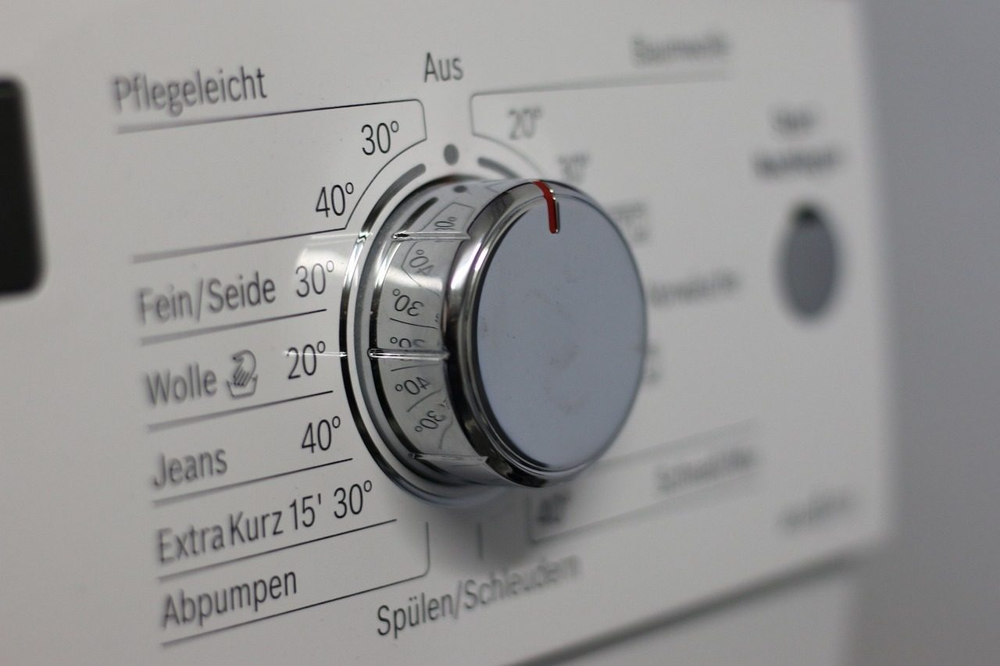

Anfrage
Sie schildern Ihr Vorhaben online, telefonisch oder persönlich. Auch außerhalb der Geschäftszeit erreicht uns Ihre Nachricht über das Formular.
Start Leistungen
Wir sind Ihr kompetenter Ansprechpartner in Martinsberg und Linz im Bereich der Elektrotechnik. Mit uns haben Sie einen zuverlässigen Partner an Ihrer Seite — wir beraten, planen und realisieren Ihre Projekte absolut unkompliziert, rasch und professionell.

01 — Hausinstallation
Ganz egal, ob Sie Ihre elektrotechnische Versorgung im Eigenheim erst planen oder bereits errichten: Wir stehen Ihnen mit Rat und Tat zur Seite. Wir übernehmen auch gerne Sanierungen aus vergangenen Jahren, um Ihre Elektroinstallation auf den neuesten Stand der Technik zu modernisieren und Ihre Sicherheit nach aktuell geltenden Normen und Standards zu 100 % zu gewährleisten. Höchste Kundenzufriedenheit steht bei jedem einzelnen Projekt an erster Stelle.

02 — Hausautomatisierung
Sie suchen einen kompetenten Partner für die Automatisierung Ihres Eigenheims? Gemeinsam mit unserem Partner Loxone sind wir in der Lage, Ihr Smart-Home bestmöglich nach aktuell gültigen Normen und Standards zu realisieren. Höchste Kundenzufriedenheit steht für uns bei jedem einzelnen Projekt an erster Stelle.

03 — E-Ladestationen
Die Elektrifizierung unseres Alltags erfordert eine dementsprechende Infrastruktur, um die notwendige Ladung der Akkumulatoren in Elektroautos zur Verfügung zu stellen. Hier sehen wir uns in der Verantwortung Ihnen gegenüber, um die erforderliche und gut ausgebaute Infrastruktur zu schaffen.
Die Kooperation mit den regionalen Energieversorgern in Wien, Niederösterreich und Oberösterreich erlaubt uns, die Infrastruktur für die E-Mobilität mitzugestalten, und gewährleistet damit die höchste Verfügbarkeit für E-Ladestationen in Ihrer Nähe.
04 — E-Check
Die sicherheitstechnische Überprüfung gemäß der ÖVE/ÖNORM E 8101-6 gewährleistet einen sicheren Betrieb Ihrer elektrischen Anlagen. Egal ob als privater oder gewerblicher Betreiber einer elektrotechnischen Anlage — Sie sind rechtlich verpflichtet, die Sicherheit zu gewährleisten.
Wir sind berechtigt, entsprechende Erstprüfungen sowie wiederkehrende Überprüfungen („E-Check“) durchzuführen, damit Sie sichergehen können, dass Ihre Elektroinstallationen — in privaten Räumlichkeiten ebenso wie in gewerblichen Betriebsstätten — alle geltenden Normen und Standards im Bereich der Sicherheitsvorschriften erfüllen.
Anhand des von der ÖVE vorgeschriebenen Anlagenbuchs und Prüfprotokolls sind Sie in der Lage, im Schadenfall zu belegen, dass Ihre Anlage den aktuell gültigen Sicherheitsvorschriften entspricht.

Für private wie gewerbliche Betreiber elektrotechnischer Anlagen. Wir führen Erstprüfungen bei Neuanlagen und wiederkehrende Prüfungen bei bestehenden Anlagen durch und stellen Ihnen die entsprechenden Elektroatteste und Prüfbescheide aus.

05 — E-Geräte-Handel
Wir als österreichisches Kleinunternehmen versorgen Sie mit Elektrogeräten ganz in Ihrer Nähe. Damit leisten wir einen Beitrag zum Klimageschehen und vermeiden viele Tonnen an Kohlendioxid durch lange Transportwege. Der Umweltgedanke ist ein wesentlicher Teil unserer Unternehmensphilosophie.
Neben Hausinstallation und -automatisierung sind wir auch als Händler für Weißware und Elektrogeräte Ihr Ansprechpartner. Beauftragen Sie uns mit Ihren benötigten Haushaltsgeräten — wir sind stets bemüht, die Produkte rasch und unkompliziert für Sie zu beschaffen.
Sprechen Sie uns an und unterstützen Sie die regionale Unternehmenskultur und vor allem Kleinbetriebe. Sie werden es nicht bereuen.
Ablauf
Sie schildern Ihr Vorhaben online, telefonisch oder persönlich. Auch außerhalb der Geschäftszeit erreicht uns Ihre Nachricht über das Formular.
Wir besprechen Ihr Anliegen und erstellen einen Kostenvoranschlag. Bei Beauftragung sämtlicher darin enthaltener Leistungen wird das Entgelt für den Kostenvoranschlag gutgeschrieben.
Sorgfältige und pünktliche Ausführung unter Einhaltung aller aktuell geltenden Normen und Standards.
Wir führen die von der ÖVE vorgeschriebenen Prüfungen durch und dokumentieren sie in Anlagenbuch und Prüfprotokoll.
Schildern Sie uns Ihr Vorhaben über das Online-Formular. Wir melden uns rasch und verlässlich, damit wir uns auf Ihr Anliegen vorbereiten und es zügig abarbeiten können.